奈良県
Nara Prefecture
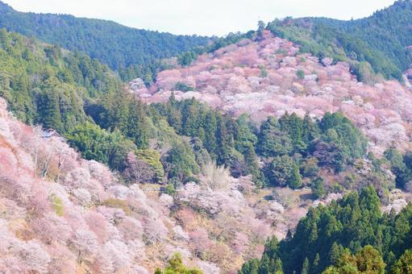
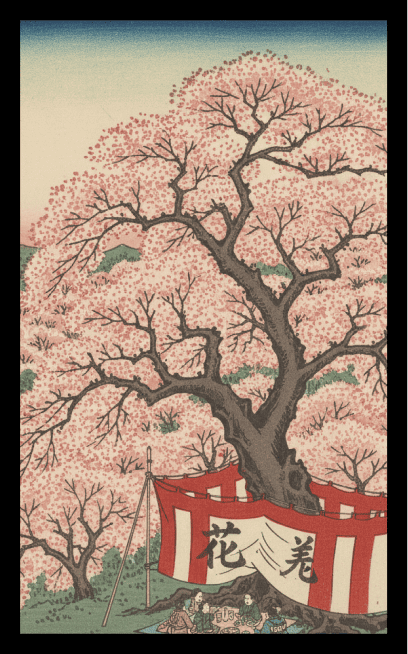
吉野山の桜に幕
風景：「一目千本」と称される吉野山の圧倒的な桜の山肌と、お花見の席を囲む紅白の幕。
解説：伝統的な「桜に幕」を、お花見の聖地である吉野山で再現。古来より多くの歌人に愛されてきた、日本を代表する桜の景勝地としての格の高さを表現します。
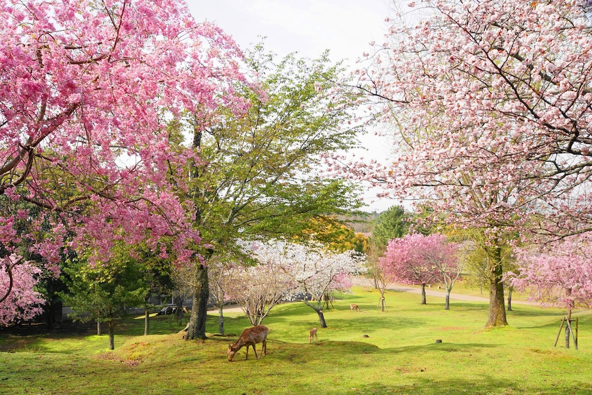
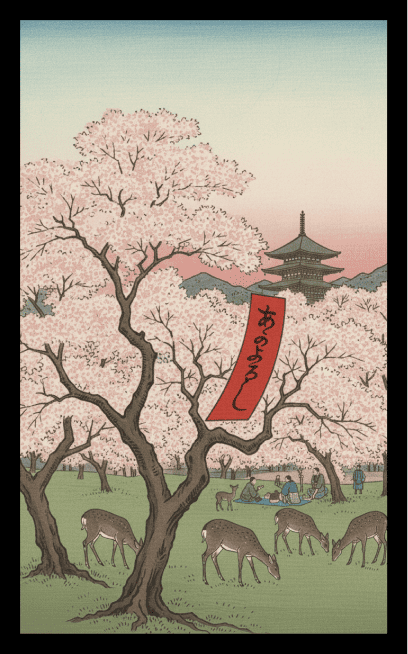
奈良公園の桜に赤短
風景：浮見堂や五重塔を遠くに望む奈良公園内の桜。
解説：悠久の時が流れる奈良公園の桜に「赤短」を添えます。鹿たちが戯れる穏やかな春の日の、雅な空気感を閉じ込めた一枚です。
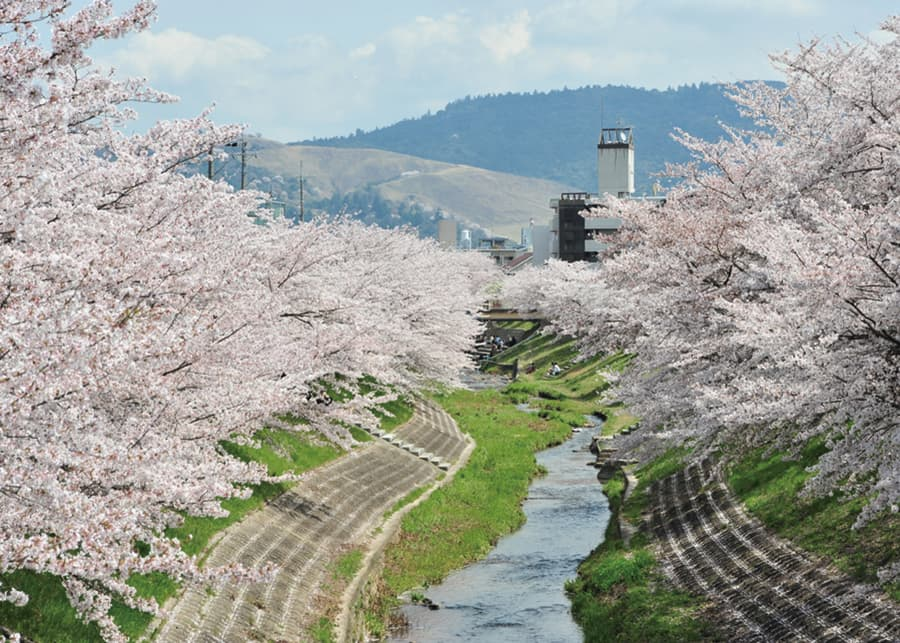
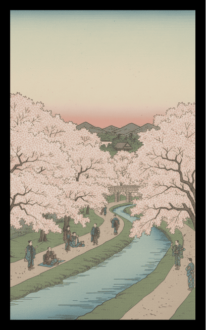
佐保川の桜並木
風景：奈良市内を流れる佐保川沿いに数キロメートル続く桜のトンネル。
解説：万葉集にも詠まれた歴史ある川。水面に散る花びら（花筏）と、どこまでも続く並木の奥行きを表現します。
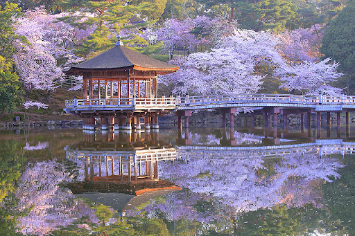
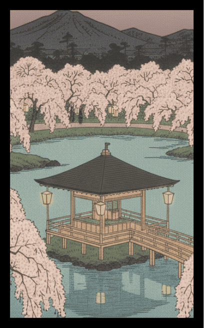
浮見堂と夜桜
風景：奈良公園・鷺池（さぎいけ）に浮かぶ八角堂の浮見堂と、ライトアップされた夜桜。
解説：水面に映り込む桜と堂のシルエット。昼間の賑わいとは異なる、静謐で幻想的な奈良の春の夜を切り取ります。
3月
絵札を押すと
詳細が見れるぞ
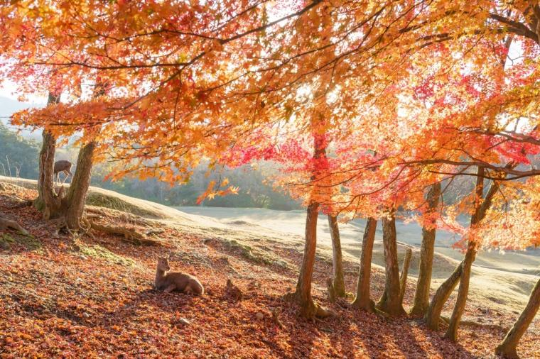
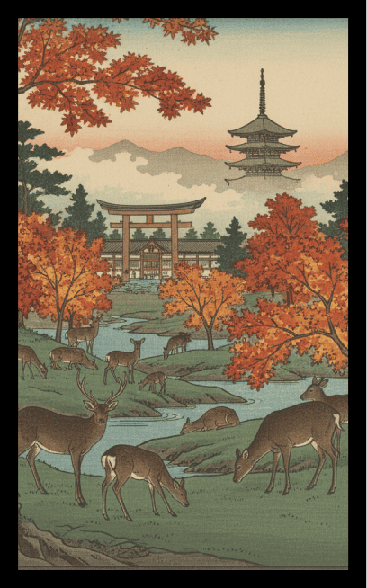
奈良公園の紅葉に鹿
風景：真っ赤に染まったモミジの木の下に佇む、立派な角を持った雄鹿。
解説：花札の定番「紅葉に鹿」を、本場である奈良公園で描写。猪鹿蝶の一翼を担う、この関西版花札の中でも最もアイコニック（象徴的）な札となります。
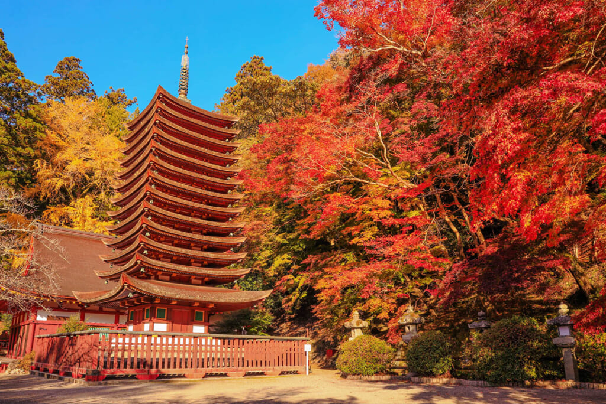
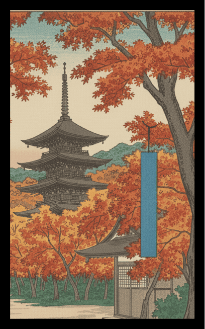
談山神社の紅葉に青短
風景：「関西の日光」とも呼ばれる談山神社の十三重塔と、それを包み込むような紅葉。
解説：多武峰（とうのみね）の鮮やかな紅葉に、気品ある「青短」を配置。大化の改新の談合が行われたとされる歴史の重みを感じさせる一枚です。
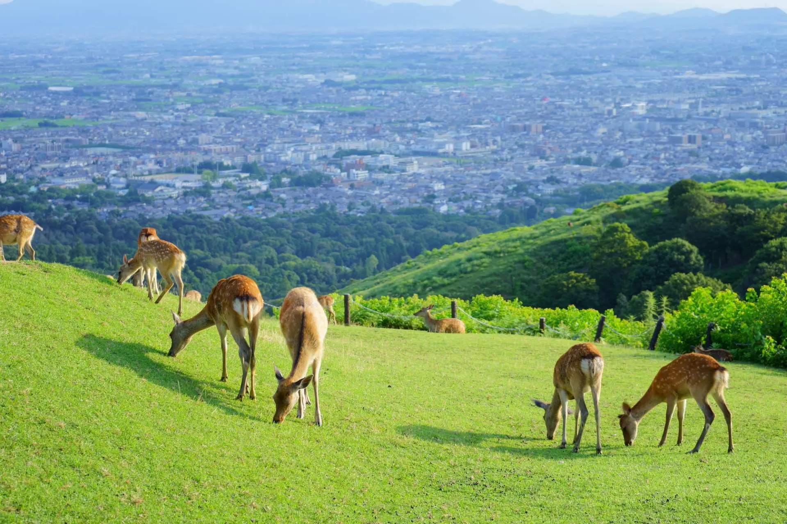
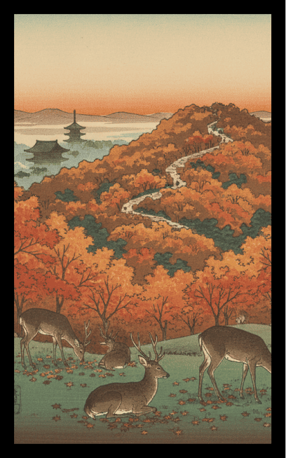
若草山の紅葉
風景：芝生に覆われた若草山の斜面が、秋色に染まっていく様子。
解説：木々の紅葉だけでなく、山全体が秋の光に照らされて黄金色や茶色に色づく、奈良らしい大らかな風景を表現します。
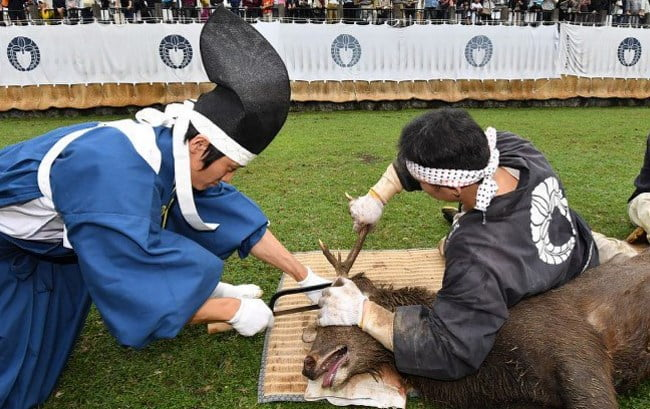
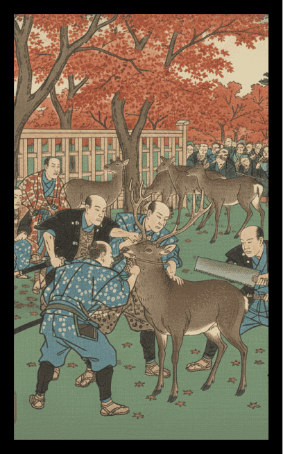
鹿の角切り
風景：奈良の秋の風物詩である「鹿の角切り」の様子。
解説：江戸時代から続く伝統行事をカス札に採用。鹿と人が共生してきた奈良独自の文化を、紅葉の風景の中に描き込みます。
10月
絵札を押すと
詳細が見れるぞ